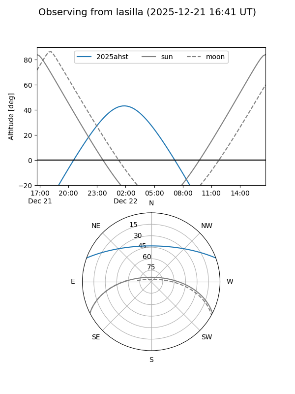
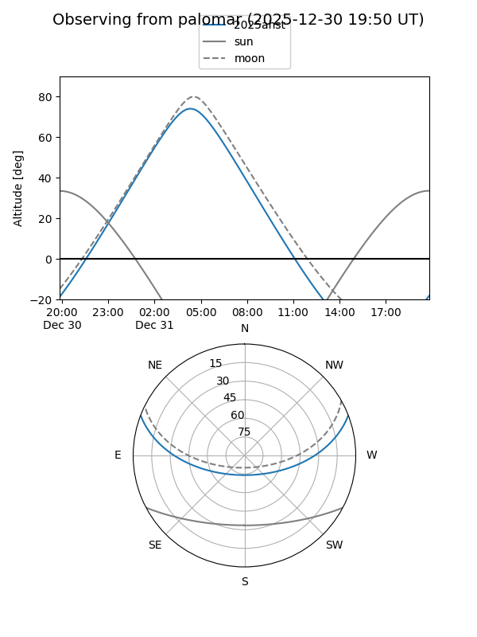
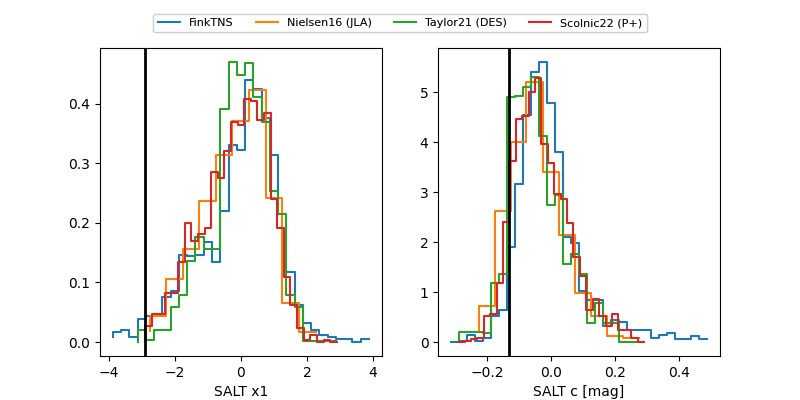

2025ahst
Target 2025ahst at 2025-12-28 07:56
Aliases and brokers:
FINK: fink-portal.org/ZTF25acigmty
Lasair: lasair-ztf.lsst.ac.uk/objects/ZTF25acigmty
ALeRCE: alerce.online/object/ZTF25acigmty
TNS: wis-tns.org/object/2025ahst
YSE: ziggy.ucolick.org/yse/transient_detail/2025ahst
alt names
ZTF25acigmty (ztf,fink_ztf)
2025ahst (tns,yse)
Coordinates:
equatorial (ra, dec) = 47.5744,+17.38303
equatorial (HMS+DMS) = 03:10:17.84,+17:22:58.91
galactic (l, b) = (164.0054,-34.18913)
Flags:
Photometry:
last ztfg=19.84, ztfr=19.78
2 ztfg, 2 ztfr detections
Lightcurve

Visibility


Additional plots
